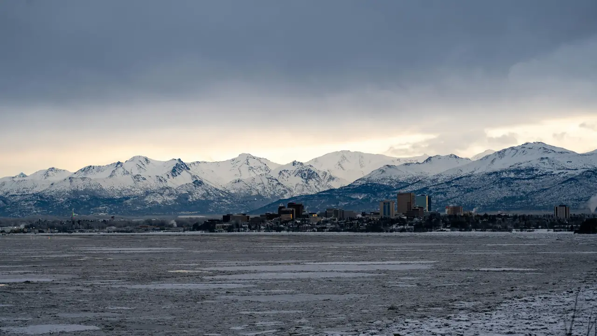
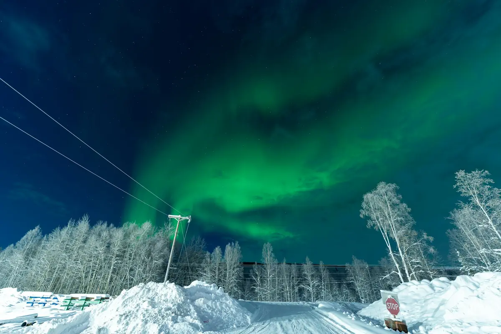

The road system
Southcentral · the Interior · the highway north
Job sites on the road system are reached by truck from our Anchorage and Fairbanks yards.
Alaska delivery
From Sitka to Utqiaġvik. Two Alaska distribution centers carry a full range of products for the commercial and residential builder, and remote-location delivery is the specialty.
Can you reach my community?
Delivery is available anywhere in Alaska. Pick a community to see which yard to call and how freight typically gets there.
Bethel, Alaska Example
60.79° N, 161.76° W
Yard to callKent
Call Kent: (253) 395-1211Yard to callAnchorage
Call Anchorage: (907) 563-2500Yard to callFairbanks
Call Fairbanks: (907) 456-1550Yard to callAny of the three
How freight typically gets there
That is not on our short list, which does not mean we cannot get there. Send the details and a yard will work out the route.
Get a quote for BethelTypical for the region, not a schedule or a price. Any yard can help.
Call the yard nearest your job
How freight moves
Much of Alaska is off the road system. We coordinate the freight; the geography picks the mode.
Southcentral · the Interior · the highway north
Job sites on the road system are reached by truck from our Anchorage and Fairbanks yards.
Southeast · the coast · western and Arctic Alaska
Coastal and river communities are reached by sea. We coordinate the booking and get your package to the dock.
Year-round, where nothing else reaches
Some communities are reached only by air. Tell us where you are building and we will work out how to get it there.
Plan around the season. Barge service to western and northern Alaska runs only in the ice-free months. Call early and we will plan back from the sailing you need.
Start a quoteHow a remote package works
Remote jobs fail on the details: a missing box of hangers, a load that misses the barge. The process is built around not letting that happen.
Send drawings or a list. We build the take-off and price it delivered.
We assemble the complete package, then crate, band and wrap it for the trip.
Truck, ocean freight, barge or air, planned against your schedule and the season.
Delivered to the dock or straight to the site, with one point of contact the whole way.

Utqiaġvik. 71° north. Still on our map.
Snow-drifted buildings on the Arctic coast. Delivery is available anywhere in Alaska.
Alaska yards
Our friendly, knowledgeable sales staff is here to help. Give us a call, email or stop by.

61.11° N Anchorage and the ChugachSouthcentral Alaska distribution center
Call Anchorage: (907) 563-2500
64.83° N Aurora near FairbanksInterior Alaska distribution center
Call Fairbanks: (907) 456-1550Questions
Delivery is available anywhere in Alaska, from Sitka to Utqiaġvik (Barrow). Tell us where the job is and we will work out the route, by road, ocean freight, barge or air, and price it.
Barge service to western and northern Alaska runs only in the ice-free months. Call early in the year: we plan backward from the sailing you need, so the package is built, crated and at the dock in time.
Yes. We are fully equipped to handle remote-location and export building packages, from framing and envelope to openings and hardware, so the whole job ships together.
Send drawings or a materials list. We will build the take-off, check it for gaps and quote it. Design services are available for projects with unique needs.
We work with you on all aspects of shipping coordination, dock delivery and rural Alaska delivery, so you have one point of contact from quote to landing.
Remote & export packages
Send plans or a list and tell us where the job is. We will quote the package and the freight together.